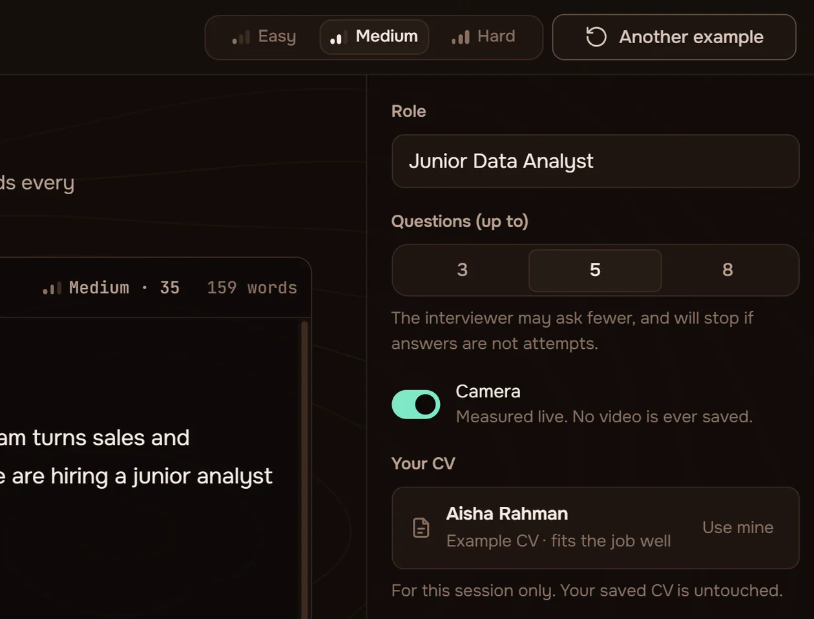
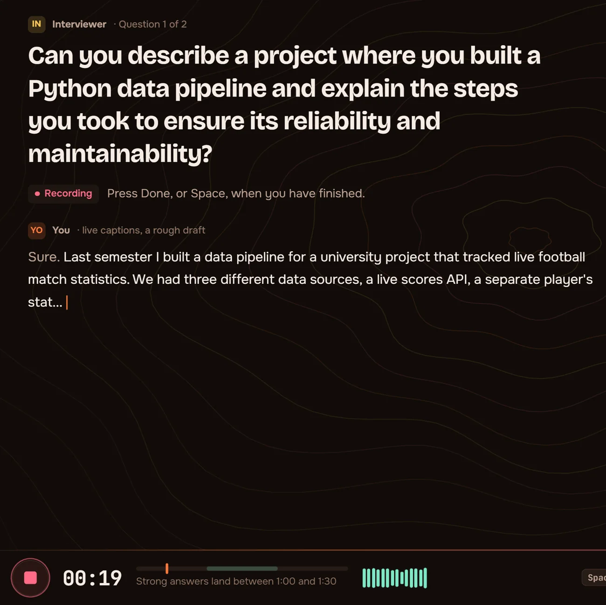
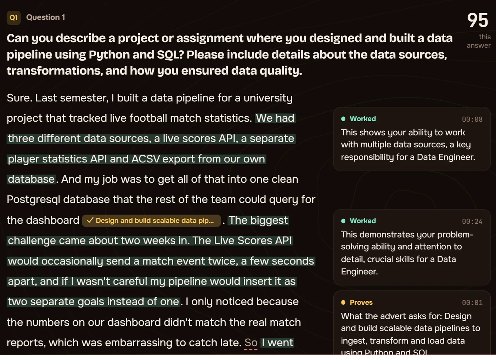
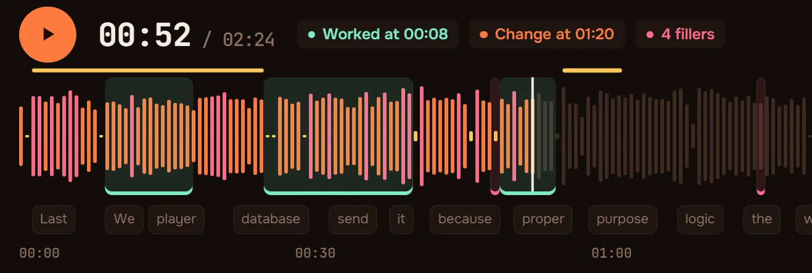

01The advert
Paste the advert.
Paste the advert you are going for, or deal an example at Easy, Medium or Hard. Callback writes the questions from it. Add your CV and each debrief checks what it claims against what you said.
Interview practice on your own machine. Paste the advert you are going for. Callback writes the questions from it, asks them out loud, presses you when an answer is thin, and then hands your answer back marked up, like a checked essay.
No account, no upload, and no video is ever written to disk.
01The advert
Paste the advert you are going for, or deal an example at Easy, Medium or Hard. Callback writes the questions from it. Add your CV and each debrief checks what it claims against what you said.
02The question
Each question is read aloud and shown on screen. A thin answer earns a follow-up, the way a real interviewer would press.
03The answer
Press Space and answer the way you would on the day. Your words appear as you speak, and the camera is measured while you answer rather than filmed.
04The marks
Every answer comes back like a checked essay: what worked highlighted, what to change underlined, a note beside each explaining why, and a line you could say instead.
Tell me about a time you explained a technical decision to someone non-technical.
So I basically just told them it would be better for performance, and they went with it, which was fine because it worked out in the end. I drew the two options on a whiteboard so they could see the cost of each.
An illustration of the debrief, not a real session.
Four screens, start to finish. Every picture below is the real app, with notes in the margin.

Paste the advert for the job you are going for. No advert to hand? Choose Easy, Medium or Hard and press Another example: every click deals a different job, with a CV written for it.
Ctrl + Enter starts the interview.

Each question is read aloud and shown on screen. Press Space, answer the way you would on the day, and press Space again when you finish. A thin answer earns a follow-up, the way a real interviewer would press.

Every answer comes back like a checked essay: what worked highlighted, what to change underlined, a note beside each explaining why, and a line you could say instead.

Your recording, laid out as a tape. Every mark from the debrief sits on it at the second it happened, so you can hear exactly what a note is about.
If you have had one interview, or none, the hardest part is that you never hear yourself. You leave the room knowing it went badly without knowing which part.
This is the room you go to first: one question, a timer, and afterwards somebody showing you plainly what landed and what did not.
Every model runs on this computer: the transcription, the language model that writes and scores, and the camera analysis. There is no account, nothing is uploaded, and the camera is measured while you answer rather than filmed.
Not stored and then deleted: never written. What the camera contributes is whether you stayed in frame and how steady you held position.
The server binds to your own machine's loopback address. Your answers do not cross a network.
Nothing to sign up for, and nothing that identifies you. Close the tab and it is over.
One advert, a few questions out loud, and a debrief that marks the part you would rather not hear.
Start a session